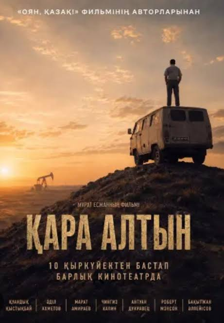

«Бір мұнайдың тарихы. Мың тәуекел. Бір үлкен мақсат.»
Медғат Құлжановтың өмір жолы, құрылыстан мұнай өндірісіне өткен кезеңі, Қоныс пен Бектас кен орындарын игеру тарихы және Қазақстандағы алғашқы жекеменшік мұнай кәсібінің қалыптасуы.
Зерттеу материалдары ↓Медғат Кәрімұлы Құлжанов (1947 ж. туған, Абай облысы, Аягөз/Сергиополь) — ҚазПТИ түлегі, құрылыс инженері. 1971–1987 жылдары Алматы, Лепсі, Екібастұз («Экибастузэнергострой») және Теңіз кен орны маңындағы «Монолитстрой» басқармасын басқарды. 1988 жылы мамырда Қонаевта (Қапшағай) Қазақстандағы алғашқы жеке кооперативтердің бірі — «Монолит» құрылыс кооперативін құрып, монолитті үй құрылысы технологиясын енгізді.
1990-жылдардың басында геолог Райымбек Шақабаевтың ұсынысымен Сырдария даласындағы «аз перспективалы» саналған Бектас (1987 ж. ашылған) пен Қоныс (1990 ж. ашылған) кен орындарына қол жеткізді. 1994 жылы британдық Amlon Group-пен құрылған «ҚуатАмлонМұнай» БК далалық жағдайда 150-ден астам ұңғыма бұрғылап, Құмкөл магистраліне қосылатын **70 шақырымдық мұнай құбыры** мен жеке теміржол терминалын салып шықты.
2003 жылы желтоқсанда 1 миллион тонна мұнай өндіру межесіне жеткен кәсіпорын 2009 жылы сатылған соң, М. Құлжанов өз капиталын Абай мен Шәкәрім мұрасын әлемдік деңгейде танытуға бағыттады. Бұл қызмет 2010 жылы 31 қазанда Лондондағы әйгілі **Royal Festival Hall** залында британ композиторы Карл Дженкинстің **«Шәкәрім» симфониясының** әлемдік премьерасымен триумфқа ұласты.
«Қуат» холдингі Қызылорда облысы Сырдария ауданындағы Қоныс пен Бектас кен орындарының геологиялық әлеуетін негіздейді.
Британдық Amlon Group тобы 100% қаржыландыруды мойнына алады, ал Бас және Қаржы директорлары Қазақстан тарапынан тағайындалады.
1997 ж. алғашқы мұнай бұрқағы алынып, 2003 ж. 1 млн тонна межесі бағындырылады. Құмкөлге 70 км мұнай құбыры мен терминал салынады.
Мұнай бизнесінен жиналған капитал Абай мен Шәкәрім мұрасын әлемдік деңгейде (Лондон, Royal Festival Hall) насихаттауға жұмсалады.

Тәуелсіздіктің алғашқы жылдарындағы отандық мұнай өндірісінің қалыптасу жолындағы ауыр белестерді, инвестор іздеу мен адам рухының қайсарлығын баяндайтын мотивациялық бизнес-драма.
«Қара алтынды табу қиын ба, әлде оған дейінгі жол қиын ба?»
Мұнай тарихы — жер астындағы табиғи байлық туралы ғана емес, белгісіздікке қарсы тұрған тәуекел, бюрократиялық кедергілерді жеңген табандылық, қаржылық дипломатия және табылған байлықты ұлттың рухани мұрасына айналдыра білген үлкен мақсат жолындағы күрес туралы тарих.